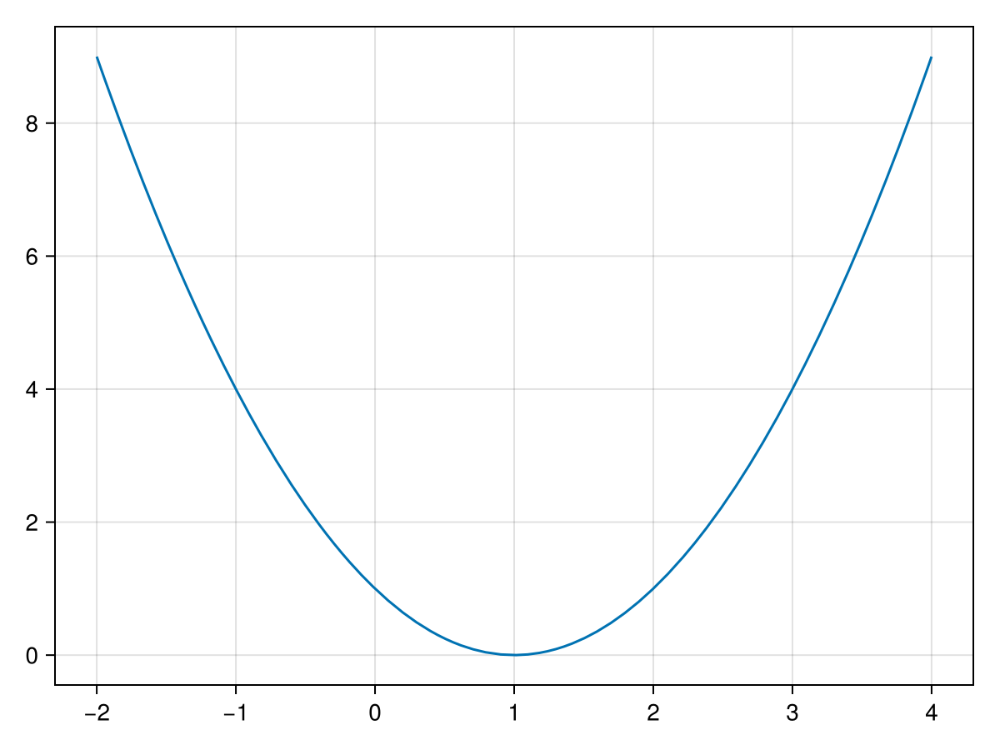
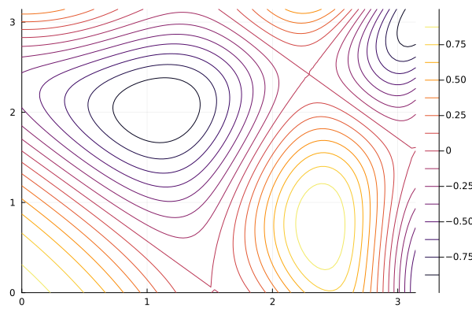
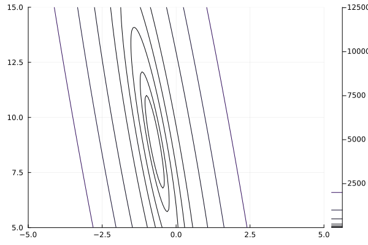

Optimization is an extremely useful subject in Scientific Computation and is often used in other fields. In short, optimization is the selection of some parameters in order to minimization or maximize some function. A simple example is if we have a function like \(f(x) = x^2\) which has the plot:

Figure31.1.
and we are trying to find the minimum of the function, which appears to be an \(x=1\) from the plot.
Recall the following definitions of optimal points:
Definition31.2.
Consider a function \(f(x)\) that is continuous on some open interval containing \(c\text{.}\)
a local minimum is a number \(f(c)\text{,}\) such that \(f(x)\geq f(c)\) for all \(x\) in the interval \([c-\epsilon,c+\epsilon]\) for some small \(\epsilon > 0\text{.}\)
a local maximum is a number \(f(c)\text{,}\) such that \(f(x)\geq f(c)\) for all \(x\) in the interval \([c-\epsilon,c+\epsilon]\) for some small \(\epsilon > 0\text{.}\)
We can extend this to functions of more that one variable. The following is the definition of optimal points of functions of two variables and further can be found in [REF??]
Definition31.3.
Consider a function \(f(x,y)\) that is continuous on some open ball of radius \(\epsilon > 0\) containing the point \((x_0,y_0)\text{,}\) denoted \(B_{(x_0,y_0)}(\epsilon)\)
a local minimum is a number \(f(x_0,y_0)\text{,}\) such that \(f(x,y)\geq f(x_0,y_0)\) for all \(x\) in the ball \(B_{(x_0,y_0)}(\epsilon)\)
a local minimum is a number \(f(x_0,y_0)\text{,}\) such that \(f(x,y)\leq f(x_0,y_0)\) for all \(x\) in the ball \(B_{(x_0,y_0)}(\epsilon)\)
Section31.1Newton’s Method
We saw Newton’s Method in Chapter 10 which found values where \(f(x)=0\text{.}\) If a function is differentiable, then we can use Newton’s Method on \(f'(x)\) to find minima and maxima.
First, make sure that you have the Rootfinding.jl file and then
include("Rootfinding.jl")
using ForwardDiff, .Rootfinding, LinearAlgebra
Then we can use Newton’s method on the derivative of the function
f(x::Real) = (x-1)^2
by
newton(x -> ForwardDiff.derivative(f,x),0)
which returns
The root is approximately x̂ = 1.0
An estimate for the error is 0.0
with f(x̂) = 0.0
which took 1 steps
This method works reasonably well to find local minima or maxima of functions of 1 variable if the function is differentiable. However, often, functions are of more than one variable and not differentiable and we would still like to find optimum points. There are other more robust methods that we start with below.
Section31.2Gradient Descent
The basic method for optimizing functions of more than 1 variable is called gradient descent. Consider
we can produce a contour plot of the region \([0,\pi]\times[0,\pi]\) with
x = y = LinRange(0,pi,101)
contour(x, y, (x, y) -> sin(0.5x^2-0.25y^2+2)*cos(x+y))
and these commands results in the following contour plot.

Figure31.4.
The colors of the contours have heights given on the bar to the side. There is a local minimum near the point \((1,2)\) and we will use a gradient descent method to find this.
The idea with gradient descent is that a starting point is chosen in a manner similar to that of Newton’s method. The gradient of a function, \(\nabla f\text{,}\) denotes a vector showing the direction of greatest increase. Since we are seeking a minimum, the direction of greatest descent is the opposite direction or \(-\nabla f\text{.}\)
where \(\gamma_n\) is some number that may depend on the point.
Subsection31.2.1Gradient Descent using Julia
Here is some julia code that will peform a simple gradient descent algorithm.
function gradientDescent(f::Function,x₀::Vector; γ = 0.25, max_steps = 100)
local steps = 0
local ∇f₀ = [1,1] # initialize it to get into while loop
while norm(∇f₀) > 1e-8 && steps < max_steps
∇f₀ = ForwardDiff.gradient(f,x₀)
x₀ = x₀ - γ*∇f₀
steps += 1
end
steps < max_steps || throw(ErrorException("The number of steps has exceeded $max_steps"))
x₀
end
and we can use this code 1
To get the \(\nabla\) symbol above, type \nabla, then hit TAB. To get subscripts like x₀, type xthen \_0then hit tab. You can get other numerical subscripts with other digits after the underscore.
to find a minimum of the function in (31.1), first we define it as
where the value x needs to be a Vector, which is a 1D array, for the ease of taking gradients with the ForwardDiff.gradientfunction. The standard \(x\) and \(y\) variables are x[1]and x[2]respectively. To find the minimum with this function use:
The maximum can be found using this same method by finding the minimum of the negative of this function. Find the maximum of this same function near the point \((2.5,0.5)\text{.}\)
Subsection31.2.2The Barzilai–Borwein method
We used a constant for the value \(\gamma\) above, however, in [REF!!!], Barzilai and Borwein developed a steepest descent method that acts much like Newton’s method in term of convergence speed by selecting:
Note, though that \(\gamma_n\) requires knowing information at the previous step (both \(\mathbf{x}_{n-1}\) and \(\nabla f(\mathbf{x}_{n-1})\)) which is not available on the first step. We can use the simple gradient descent (where we used a constant value of \(\gamma\)) on the first step and then
function gradientDescentBB(f::Function,x₀::Vector; max_steps = 100)
local steps = 0
local ∇f₀ = ForwardDiff.gradient(f,x₀)
local x₁ = x₀ - 0.25 * ∇f₀
while norm(∇f₀) > 1e-4 && steps < max_steps
∇f₁ = ForwardDiff.gradient(f,x₁)
Δ∇f = ∇f₁-∇f₀
x₂ = x₁ - abs(dot(x₁-x₀,Δ∇f))/norm(Δ∇f)^2*∇f₁
x₀ = x₁
x₁ = x₂
∇f₀ = ∇f₁
steps += 1
end
steps < max_steps || throw(ErrorException("The number of steps has exceeded $max_steps"))
x₁
end
Section31.3Fitting Data to a Line -- Linear Regression
We saw in Chapter 9 of fitting various functions to data. We skipped over a lot of details there by using a package called LsqFit. We’re going to revisit this by using the techniques here, which allows use to find fits in more generally ways than using that package. We’ll start with a common task of finding the best fit line through a set of points and let’s just take a small example. Let
\begin{equation*}
E = \sum_{i=1}^N (mx_i+b -y_i)^2
\end{equation*}
and we want to minimize this recalling that the variables are \(m\) and \(b\) (note that \(x\) and \(y\) are the data). Basically, this comes down to defining the function \(E\) in julia and using one of the methods from above. We can write \(E\) down like
leastSqLine(coeffs::Vector{T}) where T <: Real = sum(pt -> (coeffs[1]*pt[1]+coeffs[2]-pt[2])^2,pts)
where ptsis defined above. If we try
gradientDescent(leastSqLine,[-1,10])
the result is The number of steps has exceeded 100. Oops. This is common for some functions of more that one variable. If we look at a contour plot with the command:
x = LinRange(-5,5,201)
y = LinRange(5,15,201)
contour(x,y,(x,y) -> leastSqLine([x,y]),levels=[0,10,20,50,100,200,500,1000,2000])

Figure31.7.
you can see that there appears to be a minimum, however it is in a long narrow canyon. This is a common example where gradient descent does not work well, even if we try different values of \(\gamma\text{.}\) (Try it!!) Instead, if we use the Barzilai–Borwein method,
As discussed elsewhere, a polynomial has many nice properties for a function. This includes 1) there are only multiplications, additions and subtractions of numerical values to evaluate it (these are all fast operations on a CPU) and 2) horner’s form of the polynomial make them super fast to evaluate. Because of this, using a polynomial as way to calculate other functions is common.
In this section, we will fit a polynomial to a natural logarithm. It will be similar to fitting data to a line, except the data will be generated from a function and we will use a polynomial (of some degree as the fit). Let’s try to fit a cubic to a set of data generated by \(y=\ln (x)\) on \([1,5]\text{.}\) We first generate the x points with
x=LinRange(1,5,10)
and then can define the least squares for the log with:
leastSqLog(c::Vector{T}) where T <: Real = sum(xpt -> (c[1]+c[2]*xpt+c[3]*xpt^2+c[4]*xpt^3-log(xpt))^2,x)
and this shows that with just a cubic, we can approximate the natural log to 0.016 (almost 2 digits). If we choose a higher-degree polynomial, we can do better and in fact, using polynomials as approximations is often the way that many mathematical functions are evaluated.
Section31.4Using the JuMP package
There is a very nice package for optimization called the JuMP package \cite{DunningHuchetteLubin2017} which allows the ability to set up a problem, then optimize it. Make sure you add the following packages and then
using JuMP, Ipopt
Let’s first minimize the function of two variables at the top of this chapter with
model = Model(Ipopt.Optimizer)
@variable(model, x, start = 0.1)
@variable(model, y, start = 0.1)
@NLobjective(model, Min, sin(0.5x^2-0.25y^2+2)*cos(x+y))
and note that there was no output. This only adds the two variables as well as the objective function and since it is nonlinear, we use the @NLobjectivemacro.
To find the minimum,
optimize!(model)
which returns
******************************************************************************
This program contains Ipopt, a library for large-scale nonlinear optimization.
Ipopt is released as open source code under the Eclipse Public License (EPL).
For more information visit https://github.com/coin-or/Ipopt
******************************************************************************
This is Ipopt version 3.14.14, running with linear solver MUMPS 5.6.2.
Number of nonzeros in equality constraint Jacobian...: 0
Number of nonzeros in inequality constraint Jacobian.: 0
Number of nonzeros in Lagrangian Hessian.............: 3
Total number of variables............................: 2
variables with only lower bounds: 0
variables with lower and upper bounds: 0
variables with only upper bounds: 0
Total number of equality constraints.................: 0
Total number of inequality constraints...............: 0
inequality constraints with only lower bounds: 0
inequality constraints with lower and upper bounds: 0
inequality constraints with only upper bounds: 0
iter objective inf_pr inf_du lg(mu) ||d|| lg(rg) alpha_du alpha_pr ls
0 8.9014960e-01 0.00e+00 2.21e-01 -1.0 0.00e+00 - 0.00e+00 0.00e+00 0
1 8.8938129e-01 0.00e+00 2.26e-01 -1.7 2.26e-03 2.0 1.00e+00 1.00e+00f 1
2 8.8683604e-01 0.00e+00 2.40e-01 -1.7 7.19e-03 1.5 1.00e+00 1.00e+00f 1
3 8.7635157e-01 0.00e+00 2.89e-01 -1.7 2.61e-02 1.0 1.00e+00 1.00e+00f 1
4 7.7132679e-01 0.00e+00 5.70e-01 -1.7 1.59e-01 0.6 1.00e+00 1.00e+00f 1
5 7.0600048e-01 0.00e+00 6.73e-01 -1.7 6.88e-02 1.0 1.00e+00 1.00e+00f 1
6 2.3792272e-01 0.00e+00 9.03e-01 -1.7 3.57e-01 0.5 1.00e+00 1.00e+00f 1
7 -8.1257894e-01 0.00e+00 6.74e-01 -1.7 1.13e+00 0.0 1.00e+00 1.00e+00f 1
8 -9.5265426e-01 0.00e+00 4.47e-01 -1.7 5.61e-01 - 1.00e+00 1.00e+00f 1
9 -9.9993858e-01 0.00e+00 1.64e-02 -1.7 2.12e-01 - 1.00e+00 1.00e+00f 1
iter objective inf_pr inf_du lg(mu) ||d|| lg(rg) alpha_du alpha_pr ls
10 -1.0000000e+00 0.00e+00 9.57e-05 -3.8 7.48e-03 - 1.00e+00 1.00e+00f 1
11 -1.0000000e+00 0.00e+00 3.43e-09 -5.7 4.25e-05 - 1.00e+00 1.00e+00f 1
Number of Iterations....: 11
(scaled) (unscaled)
Objective...............: -1.0000000000000000e+00 -1.0000000000000000e+00
Dual infeasibility......: 3.4309616552489507e-09 3.4309616552489507e-09
Constraint violation....: 0.0000000000000000e+00 0.0000000000000000e+00
Variable bound violation: 0.0000000000000000e+00 0.0000000000000000e+00
Complementarity.........: 0.0000000000000000e+00 0.0000000000000000e+00
Overall NLP error.......: 3.4309616552489507e-09 3.4309616552489507e-09
Number of objective function evaluations = 12
Number of objective gradient evaluations = 12
Number of equality constraint evaluations = 0
Number of inequality constraint evaluations = 0
Number of equality constraint Jacobian evaluations = 0
Number of inequality constraint Jacobian evaluations = 0
Number of Lagrangian Hessian evaluations = 11
Total seconds in IPOPT = 0.032
EXIT: Optimal Solution Found.
There’s a lot to unpack here, but there just a few things to note:
All of the steps are shown. This took 11 steps and you see the objective column reports the value of the objective starting at the point \((0.1,0.1)\) with value 8.901e-01and decreasing to -1.0e+00
There are total number of function, gradient, Jacobian and Hessian evaluations, where the latter two are matrices of derivatives. Like we did in defining our gradient descent function, these are done with the ForwardDiffpackage. This is helpful if your function takes a long time to compute to see where time is spent.
The last line says EXIT: Optimal Solution Found.which is what we wanted.
Note that the point itself is not listed. We can get this with the valuefunction, so
value(x),value(y)
returns
(1.1036863858138652, 2.0379062691204775)
which is the same point (to nearly the same precision) as we found above.
Subsection31.4.1Linear Regression with JuMP
We can minimize this function with
model = Model(Ipopt.Optimizer)
set_optimizer_attribute(model,"print_level",3)
@variable(model,m,start=0)
@variable(model,b,start=0)
@NLobjective(model,Min, sum((m*pt[1]+b-pt[2])^2 for pt in pts))
optimize!(model)
where we have set the print_levelattribute of the Ipopt solver to 3 to print out less information. Also, note that the way the objective function is called And we haven’t shown the information here, but the most important aspect is that it found the solution. The values are
value(m),value(b)
which returns
(-0.7248062015503872, 8.8953488372093)
and now we can plot the result together with the points with